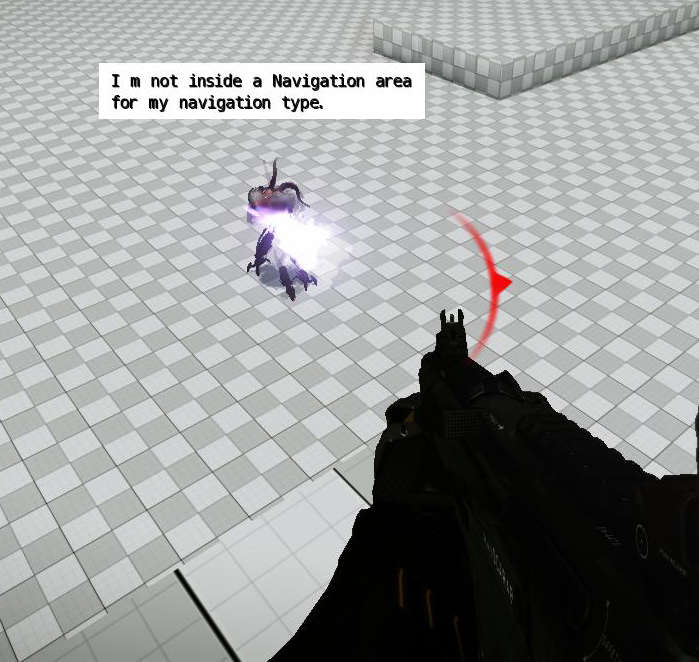
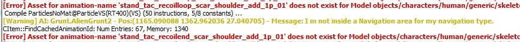
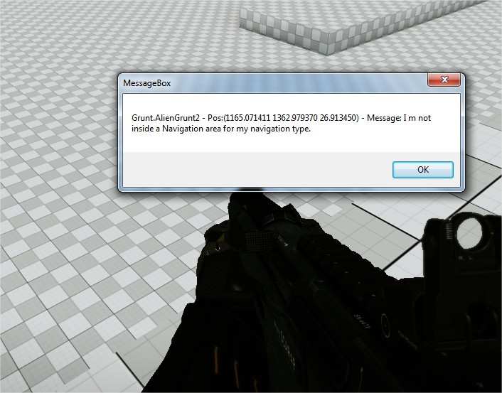

Что такое система пузырьков AI?
Система AI Bubbles хочет стать глобальным центром для сбора сообщений об ошибках AI, которые необходимо адресовать дизайнерам уровней.
Слишком частая отладка неправильного поведения любого агента AI может занять много времени, поскольку трудно отследить, какая система связана с проблемой и какие переменные необходимо включить для получения важной информации.
Решение этой проблемы — отправить важные сообщения в AI Система пузырей: программистам нужно запихивать важные сообщения в систему, а потом последняя позаботится о том, чтобы уведомить дизайнеров уровней о том, что не так в конкретный момент.
Различные типы сообщений
Каждое сообщение, отправленное внутрь системы, может отображаться как:
- Речевое сообщение над агентом AI:

- Сообщение в консоли:

- Блокирование всплывающих окон с набором информации (имя агента, должность агента и т. д.), позволяющее дизайнеру понять, что что-то не так в обычном процессе.

Вы можете указать тип сообщения, поставленного в очередь в системе, при вызове AIQueueBubbleMessage.
Эта функция определяется как:
bool AIQueueBubbleMessage(const char* messageName, const IAIObject* pAIObject,
const char* message, uint32 flags);
Где разные параметры:
Имя параметра | Описание |
|---|---|
messageName | Это строка, описывающая сообщение. Это необходимо для постановки в очередь одной и той же ошибки сообщения более одного раза (сообщение можно снова отправить в систему, когда истечет срок его действия, и оно будет удалено из очереди). |
pAIObject | Это указатель на объект, связанный с сообщением. |
сообщение | Сообщение, которое необходимо отобразить |
флаги | Тип сообщения. Это значение этой переменной можно получить, комбинируя следующие флаги:
|
CVar для управления системой
Следующие переменные доступны для управления поведением пузырьковой системы AI.
Имя переменной CVar | Описание | |
|---|---|---|
ai_BubblesSystem | Включает/отключает систему пузырьков AI. | |
ai_BubblesSystemDecayTime | Указывает количество секунд, в течение которых на экране будет отображаться всплывающее сообщение, прежде чем можно будет нарисовать следующее сообщение. | |
ai_BubblesSystemAlertnessFilter | Указывает уровень готовности, который хочет иметь дизайнер: | |
ai_BubblesSystemUseDepthTest | Указывает, должно ли уведомление быть закрыто геометрией мира или нет. | \ |
ai_BubblesSystemFontSize | Определяет размер шрифта сообщения, отображаемого в трехмерном мире. |
Использование С++
AIQueueBubbleMessage("COPStick::Execute PATHFINDER_NOPATH non continuous", pPipeUser, "I cannot find a path.", eBNS_Log|eBNS_Balloon);
Использование Lua
local entityID = System.GetEntityIdByName("Grunt.AlienGrunt1");
AI.QueueBubbleMessage(entityID,"This is just a test to try the lua connection with the bubble system");